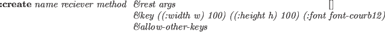
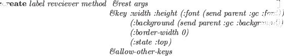
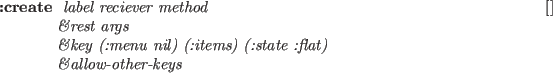
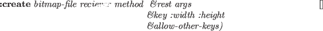
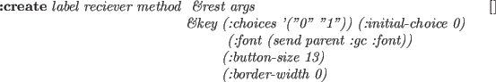

panel-item [クラス]
:super xwindow
:slots (pos notify-object notify-method
fontid label labeldots)
-
- panel-itemは、パネルアイテムwindowのすべての種類において、
アイテムが指定するイベントが発生したとき
notify-objectのnotify-methodを呼び出すための
抽象クラスである。
:notify &rest args [メソッド]
-
-
notify-objectのnotify-methodを呼び出す。
イベント応答やnotify-methodへ送るための引き数が
アイテムにより区別される。
- button-item
- ボタンは、同じbutton-itemの押し、外し時に応答。
引き数はbutton-itemオブジェクトである。
- menu-button-item
- メニューアイテムの選択時に応答。
引き数は、menu-button-itemオブジェクトである。
- choice-item
- 新しい選択ボタンの選択時に応答。
引き数は、choice-itemオブジェクトとその選択番号である。
- text-item
- 改行あるいはリターンの入力時に応答。
引き数は、text-itemオブジェクトと入力行（文字列）である。
- slider-item
- スライダーノブは、つかみと移動時に応答。
引き数は、slider-itemオブジェクトと新たな値である。
- joystick-item
- ジョイスティックは、つかみと移動時に応答。
引き数はslider-itemオブジェクトと新しいxとyの値である。

-
- パネルアイテムを作成する。
パネルアイテムは、抽象クラスである。
このメソッドは、サブクラスによってsend-superを通してのみ
呼び出すべきである。
button-item [クラス]
:super panel-item
:slots
-
- button-itemは、簡単なパネルアイテムである。
button-itemは、四角ボックスとその中のラベル文字列を持っている。
クリックされたとき、button-itemはpanel-itemオブジェクトを唯一の引き数として
notify-objectのnotify-method
を呼び出す。
:draw-label &optional (state :top) (color bg-color) (border 2) (offset) [メソッド]
-
-
button-itemのラベルを書く。

-
- button-itemを作成する。
もし、ボタンの幅と高さが与えられないなら、サイズは
与えられたフォントを用いて書かれた
ラベル文字列に合わせて自動的に設定される。
:border-widthはデフォルトで0であるが、
擬似３次元表現でボタンを浮き出しにする。
背景やフォントは親window(すなわち、panel)で定義されているものを
デフォルトとする。
:ButtonPress event [メソッド]
-
-
もし、ボタンであれば、背景色をグレーにする。
:ButtonRelease event [メソッド]
-
-
eventの背景色を標準に変更する。
menu-button-item [クラス]
:super button-item
:slots (items item-dots item-labels
charwidth charheight
menu-window window-pos high-light)
-
- プルダウンメニューを定義する。
menu-button-itemは、button-itemのようであるが、
menu-button-itemは、ボタンの下の関連するmenu-panelが
押されたとき、
notify-objectにすぐにメッセージを送る代わりに、
活性化させる。
メニューアイテムの１つの上でマウスボタンが外されたときに、本当のメッセージが
送られる。

-
- プルダウンメニューを作成する。
receiverとmethod引き数は、影響を与えない。
:ButtonPress event [メソッド]
-
-
プルダウンメニューのボタンを反転させ、
ボタンの下に関連するmenu-panelをさらす。
:ButtonRelease event [メソッド]
-
-
このボタンの下のmenu-panelを消し、
このボタンを元に戻す。
bitmap-button-item [クラス]
:super button-item
:slots (pixmap-id bitmap-width bitmap-height)
-
- bitmap-button-itemの関数は、button-itemに似ているが、
表現が異なっている。
button-itemの場合にボタンの上に簡単なラベル文字列を描く代わりに、
bitmap-button-itemでは、ボタンが作られたときにbitmapファイルから
ロードされるpixmapを描く。

-
- bitmap-button-itemを作成する。
最初の引き数bitmap-fileは、button-itemのlabel引き数
を置き換えたものである。
:draw-label &optional (state :flat) (color bg-color) (border 2) [メソッド]
-
-
ボタンの上にbitmapかpixmapを描く。
:create-bitmap-from-file fname [メソッド]
-
-
fnameという名のbitmapファイルからpixmapを作り、
pixmap-idにそのIDを入れる。
choice-item [クラス]
:super button-item
:slots (choice-list active-choice transient-choice
choice-dots choice-pos button-size)
-
- choice-itemは、丸い選択ボタンの集合である。
１つの選択はいつも活性化しており、同時に１つの選択だけが
活性化することができる。
choice-itemは、ラジオボタンと同様な機能を提供する。

-
- choice-item-buttonを作成する。
それぞれの選択ボタンは:button-sizeの半径を持つ円である。
新しい選択ボタンが選択されたとき、
notify-objectのnotify-methodが
choice-itemオブジェクトと選択された選択ボタンの番号と一緒に呼び出される。
:value &optional (new-choice) (invocation) [メソッド]
-
-
もし、new-choiceが与えられたならば、現在の活性化選択ボタンとして
設定し、対応する円が黒色になる。
もしinvocationも指定されているなら、notify-objectの
notify-methodが呼び出される。
:valueは、現在の（あるいは新しい）選択ボタンの番号を返す。
:draw-active-button &optional
(old-choice active-choice) (new-choice active-choice) [メソッド]
-
-
ボタンを活性化として書く。
:ButtonPress event [メソッド]
-
-
もし、選択ボタンのどこかでマウスボタンが押されているなら、
その番号がtransient-choiceに記録される。
マウスボタンが外されるまでそれ以上の行動は、起こさない。
:ButtonRelease event [メソッド]
-
-
もし、既に押されていたところと同じボタンの上でマウスボタンが外されたなら、
active-choiceが更新され、
notify-objectのnotify-methodが呼び出される。
slider-item [クラス]
:super panel-item
:slots (min-value max-value value
minlabel maxlabel valueformat
bar-x bar-y bar-width bar-height valuedots label-base
nob-x nob-moving
charwidth)
-
- choice-itemが離散的な値の選択に使用されるのに対し、
slider-itemはmin-valueとmax-valueの間の範囲の
連続的な値に対して使用される。
それぞれ値が変化した瞬間、slider-itemオブジェクトと新しい値が引き数として
一緒にnotify-objectのnotify-methodが呼び出される。

-
- slider-itemを作成する。
スライドのノブは、バーの上に小さな黒の四角として表示される。
左端が:min値を表現し、右端が:max値を表現する。
バーの長さは、:spanドットに引き伸ばす。
現在の値は、:value-formatでslider-itemの右に表示する。
:value &optional newval invocation [メソッド]
-
-
もし、newvalが与えられたなら、現在の値として設定され、
ノブは対応する位置にスライドする。
もし、invocationもnon NILに指定されていたなら、
notify-objectのnotify-methodが呼び出される。
:valueは、現在の（新しい）値を返す。
joystick-item [クラス]
:super panel-item
:slots (stick-size min-x min-y max-x max-y
center-x center-y stick-x stick-y
value-x value-y
stick-return stick-grabbed
fraction-x fraction-y)
-
- joystick-itemは、2次元のslider-itemとしてみなすことができる。
2つの連続値はクモの巣のような同心円図の上を動く黒い円によって
指定することができる(図 18)。

-
- :stick-sizeは、スティックの黒い円の半径である。
同心円図の円の大きさは、joystick-item windowの幅と高さ
に合うように決定される。
もし、:returnがnon NILであるなら、
ジョイスティックは、マウスボタンが外された時の原点に帰る。
そうでないなら、ジョイスティックは、外された位置に残る。
:value &optional (newx) (newy) (invocation) [メソッド]
-
-
もし、newxとnewyが与えられたなら、
現在の位置として設定され、ジョイスティックは同心円図の
対応する位置に移動する。
もし、invocationもnon NILに指定されたなら、
notify-objectのnotify-methodが、
joystick-itemオブジェクトとx,y値を引き数として一緒に呼び出される。
:valueは、現在の（新しい）値のリストを返す。
以下に上に記述されているpanel-itemを使った短いプログラムを示し、
図 18がパネルの中にどのように表示されるかを示したものである。
(in-package "X")
(defclass testPanel :super panel
:slots (quit joy choi sli))
(defmethod testPanel
(:create (&rest args)
(send-super* :create :width 210 :height 180
:font font-courb12 args)
(send-super :create-item button-item "quit" self :quit :font font-courb14)
(send-super :create-item choice-item "choice" self :choice
:choices '(" A " " B " " C ")
:font font-courb12)
(send-super :create-item slider-item "slider" self :slider
:span 90)
(send-super :create-item joystick-item "joy" self :joy)
self)
(:choice (obj c) (format t "choice: ~S ~d~%" obj c))
(:slider (obj val) (format t "slider: ~S ~s~%" obj val))
(:joy (obj x y) (format t "joy: ~S ~s ~s~%" obj x y)) )
(instance testPanel :create)
(window-main-thread)
Figure:
panelの中に作成されたpanel-item
|
text-item [クラス]
:super panel-item
:slots (textwin)
-
- text-itemは、ファイル名のような短いテキストを表示したり入力したり
するために使用する。
text-itemは、ラベル文字列とその右側に小さなテキストwindowを持っている。
テキストwindow内にポインタが置かれたとき、キー入力が可能となり、
入力された文字がバッファに入れられる。
テキストwindow内の行修正が可能である。
control-Fとcontrol-Bは前後に１文字動かし、
delはカーソルの左の１文字を削除し、
control-Dはカーソル位置の文字を削除し、
カーソル位置にはどんなグラフィック文字も挿入できる。
マウスボタンをクリックすれば、クリックされた文字にカーソルを
移動させる。
enter（改行）キーを打つことにより、バッファされたテキストが
notify-objectのnotify-methodに送られる。
-
- text-itemを作成する。
テキストwindowの行バッファには、長さの制限が無いけれども、
見える部分はcolumns文字に制限されている。
:getstring [メソッド]
-
-
キーバッファ内の文字列を返す。
2016-03-23